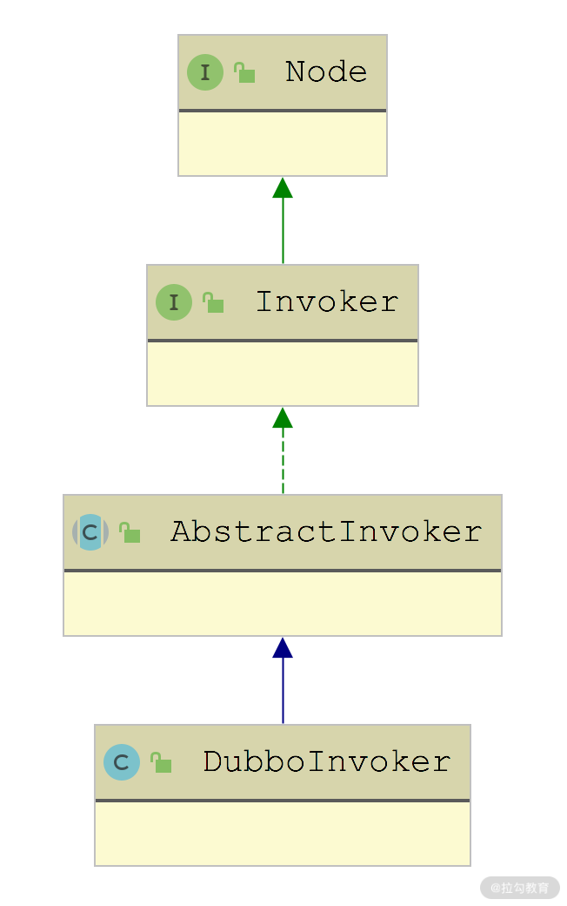
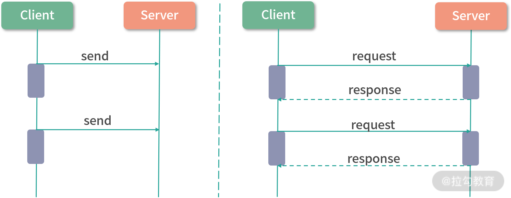

- 00 开篇词 深入掌握 Dubbo 原理与实现，提升你的职场竞争力.md.html
- 01 Dubbo 源码环境搭建：千里之行，始于足下.md.html
- 02 Dubbo 的配置总线：抓住 URL，就理解了半个 Dubbo.md.html
- 03 Dubbo SPI 精析，接口实现两极反转（上）.md.html
- 04 Dubbo SPI 精析，接口实现两极反转（下）.md.html
- 05 海量定时任务，一个时间轮搞定.md.html
- 06 ZooKeeper 与 Curator，求你别用 ZkClient 了（上）.md.html
- 07 ZooKeeper 与 Curator，求你别用 ZkClient 了（下）.md.html
- 08 代理模式与常见实现.md.html
- 09 Netty 入门，用它做网络编程都说好（上）.md.html
- 10 Netty 入门，用它做网络编程都说好（下）.md.html
- 11 简易版 RPC 框架实现（上）.md.html
- 12 简易版 RPC 框架实现（下）.md.html
- 13 本地缓存：降低 ZooKeeper 压力的一个常用手段.md.html
- 14 重试机制是网络操作的基本保证.md.html
- 15 ZooKeeper 注册中心实现，官方推荐注册中心实践.md.html
- 16 Dubbo Serialize 层：多种序列化算法，总有一款适合你.md.html
- 17 Dubbo Remoting 层核心接口分析：这居然是一套兼容所有 NIO 框架的设计？.md.html
- 18 Buffer 缓冲区：我们不生产数据，我们只是数据的搬运工.md.html
- 19 Transporter 层核心实现：编解码与线程模型一文打尽（上）.md.html
- 20 Transporter 层核心实现：编解码与线程模型一文打尽（下）.md.html
- 21 Exchange 层剖析：彻底搞懂 Request-Response 模型（上）.md.html
- 22 Exchange 层剖析：彻底搞懂 Request-Response 模型（下）.md.html
- 23 核心接口介绍，RPC 层骨架梳理.md.html
- 24 从 Protocol 起手，看服务暴露和服务引用的全流程（上）.md.html
- 25 从 Protocol 起手，看服务暴露和服务引用的全流程（下）.md.html
- 26 加餐：直击 Dubbo “心脏”，带你一起探秘 Invoker（上）.md.html
- 27 加餐：直击 Dubbo “心脏”，带你一起探秘 Invoker（下）.md.html
- 28 复杂问题简单化，代理帮你隐藏了多少底层细节？.md.html
- 29 加餐：HTTP 协议 + JSON-RPC，Dubbo 跨语言就是如此简单.md.html
- 30 Filter 接口，扩展 Dubbo 框架的常用手段指北.md.html
- 31 加餐：深潜 Directory 实现，探秘服务目录玄机.md.html
- 32 路由机制：请求到底怎么走，它说了算（上）.md.html
- 33 路由机制：请求到底怎么走，它说了算（下）.md.html
- 34 加餐：初探 Dubbo 动态配置的那些事儿.md.html
- 35 负载均衡：公平公正物尽其用的负载均衡策略，这里都有（上）.md.html
- 36 负载均衡：公平公正物尽其用的负载均衡策略，这里都有（下）.md.html
- 37 集群容错：一个好汉三个帮（上）.md.html
- 38 集群容错：一个好汉三个帮（下）.md.html
- 39 加餐：多个返回值不用怕，Merger 合并器来帮忙.md.html
- 40 加餐：模拟远程调用，Mock 机制帮你搞定.md.html
- 41 加餐：一键通关服务发布全流程.md.html
- 42 加餐：服务引用流程全解析.md.html
- 43 服务自省设计方案：新版本新方案.md.html
- 44 元数据方案深度剖析，如何避免注册中心数据量膨胀？.md.html
- 45 加餐：深入服务自省方案中的服务发布订阅（上）.md.html
- 46 加餐：深入服务自省方案中的服务发布订阅（下）.md.html
- 47 配置中心设计与实现：集中化配置 and 本地化配置，我都要（上）.md.html
- 48 配置中心设计与实现：集中化配置 and 本地化配置，我都要（下）.md.html
- 49 结束语 认真学习，缩小差距.md.html
26 加餐：直击 Dubbo “心脏”，带你一起探秘 Invoker（上）
在前面课时介绍 DubboProtocol 的时候我们看到，上层业务 Bean 会被封装成 Invoker 对象，然后传入 DubboProtocol.export() 方法中，该 Invoker 被封装成 DubboExporter，并保存到 exporterMap 集合中缓存。
在 DubboProtocol 暴露的 ProtocolServer 收到请求时，经过一系列解码处理，最终会到达 DubboProtocol.requestHandler 这个 ExchangeHandler 对象中，该 ExchangeHandler 对象会从 exporterMap 集合中取出请求的 Invoker，并调用其 invoke() 方法处理请求。
DubboProtocol.protocolBindingRefer() 方法则会将底层的 ExchangeClient 集合封装成 DubboInvoker，然后由上层逻辑封装成代理对象，这样业务层就可以像调用本地 Bean 一样，完成远程调用。
深入 Invoker
首先，我们来看 AbstractInvoker 这个抽象类，它继承了 Invoker 接口，继承关系如下图所示：

AbstractInvoker 继承关系示意图
从图中可以看到，最核心的 DubboInvoker 继承自AbstractInvoker 抽象类，AbstractInvoker 的核心字段有如下几个。
- type（Class
<T>类型）：该 Invoker 对象封装的业务接口类型，例如 Demo 示例中的 DemoService 接口。 - url（URL 类型）：与当前 Invoker 关联的 URL 对象，其中包含了全部的配置信息。
- attachment（Map<String, Object> 类型）：当前 Invoker 关联的一些附加信息，这些附加信息可以来自关联的 URL。在 AbstractInvoker 的构造函数的某个重载中，会调用 convertAttachment() 方法，其中就会从关联的 URL 对象获取指定的 KV 值记录到 attachment 集合中。
- available（volatile boolean类型）、destroyed（AtomicBoolean 类型）：这两个字段用来控制当前 Invoker 的状态。available 默认值为 true，destroyed 默认值为 false。在 destroy() 方法中会将 available 设置为 false，将 destroyed 字段设置为 true。
在 AbstractInvoker 中实现了 Invoker 接口中的 invoke() 方法，这里有点模板方法模式的感觉，其中先对 URL 中的配置信息以及 RpcContext 中携带的附加信息进行处理，添加到 Invocation 中作为附加信息，然后调用 doInvoke() 方法发起远程调用（该方法由 AbstractInvoker 的子类具体实现），最后得到 AsyncRpcResult 对象返回。
public Result invoke(Invocation inv) throws RpcException {
// 首先将传入的Invocation转换为RpcInvocation
RpcInvocation invocation = (RpcInvocation) inv;
invocation.setInvoker(this);
// 将前文介绍的attachment集合添加为Invocation的附加信息
if (CollectionUtils.isNotEmptyMap(attachment)) {
invocation.addObjectAttachmentsIfAbsent(attachment);
}
// 将RpcContext的附加信息添加为Invocation的附加信息
Map<String, Object> contextAttachments = RpcContext.getContext().getObjectAttachments();
if (CollectionUtils.isNotEmptyMap(contextAttachments)) {
invocation.addObjectAttachments(contextAttachments);
}
// 设置此次调用的模式，异步还是同步
invocation.setInvokeMode(RpcUtils.getInvokeMode(url, invocation));
// 如果是异步调用，给这次调用添加一个唯一ID
RpcUtils.attachInvocationIdIfAsync(getUrl(), invocation);
AsyncRpcResult asyncResult;
try { // 调用子类实现的doInvoke()方法
asyncResult = (AsyncRpcResult) doInvoke(invocation);
} catch (InvocationTargetException e) {// 省略异常处理的逻辑
} catch (RpcException e) { // 省略异常处理的逻辑
} catch (Throwable e) {
asyncResult = AsyncRpcResult.newDefaultAsyncResult(null, e, invocation);
}
RpcContext.getContext().setFuture(new FutureAdapter(asyncResult.getResponseFuture()));
return asyncResult;
}
接下来，需要深入介绍的第一个类是 RpcContext。
RpcContext
RpcContext 是线程级别的上下文信息，每个线程绑定一个 RpcContext 对象，底层依赖 ThreadLocal 实现。RpcContext 主要用于存储一个线程中一次请求的临时状态，当线程处理新的请求（Provider 端）或是线程发起新的请求（Consumer 端）时，RpcContext 中存储的内容就会更新。
下面来看 RpcContext 中两个InternalThreadLocal的核心字段，这两个字段的定义如下所示：
// 在发起请求时，会使用该RpcContext来存储上下文信息
private static final InternalThreadLocal<RpcContext> LOCAL = new InternalThreadLocal<RpcContext>() {
@Override
protected RpcContext initialValue() {
return new RpcContext();
}
};
// 在接收到响应的时候，会使用该RpcContext来存储上下文信息
private static final InternalThreadLocal<RpcContext> SERVER_LOCAL = ...
JDK 提供的 ThreadLocal 底层实现大致如下：对于不同线程创建对应的 ThreadLocalMap，用于存放线程绑定信息，当用户调用ThreadLocal.get() 方法获取变量时，底层会先获取当前线程 Thread，然后获取绑定到当前线程 Thread 的 ThreadLocalMap，最后将当前 ThreadLocal 对象作为 Key 去 ThreadLocalMap 表中获取线程绑定的数据。ThreadLocal.set() 方法的逻辑与之类似，首先会获取绑定到当前线程的 ThreadLocalMap，然后将 ThreadLocal 实例作为 Key、待存储的数据作为 Value 存储到 ThreadLocalMap 中。
Dubbo 的 InternalThreadLocal 与 JDK 提供的 ThreadLocal 功能类似，只是底层实现略有不同，其底层的 InternalThreadLocalMap 采用数组结构存储数据，直接通过 index 获取变量，相较于 Map 方式计算 hash 值的性能更好。
这里我们来介绍一下 dubbo-common 模块中的 InternalThread 这个类，它继承了 Thread 类，Dubbo 的线程工厂 NamedInternalThreadFactory 创建的线程类其实都是 InternalThread 实例对象，你可以回顾前面第 19 课时介绍的 ThreadPool 接口实现，它们都是通过 NamedInternalThreadFactory 这个工厂类来创建线程的。
InternalThread 中主要提供了 setThreadLocalMap() 和 threadLocalMap() 两个方法，用于设置和获取 InternalThreadLocalMap。InternalThreadLocalMap 中的核心字段有如下四个。
- indexedVariables（Object[] 类型）：用于存储绑定到当前线程的数据。
- NEXT_INDEX（AtomicInteger 类型）：自增索引，用于计算下次存储到 indexedVariables 数组中的位置，这是一个静态字段。
- slowThreadLocalMap（ThreadLocal
<InternalThreadLocalMap>类型）：当使用原生 Thread 的时候，会使用该 ThreadLocal 存储 InternalThreadLocalMap，这是一个降级策略。 - UNSET（Object 类型）：当一个与线程绑定的值被删除之后，会被设置为 UNSET 值。
在 InternalThreadLocalMap 中获取当前线程绑定的InternalThreadLocaMap的静态方法，都会与 slowThreadLocalMap 字段配合实现降级，也就是说，如果当前线程为原生 Thread 类型，则根据 slowThreadLocalMap 获取InternalThreadLocalMap。这里我们以 getIfSet() 方法为例：
public static InternalThreadLocalMap getIfSet() {
Thread thread = Thread.currentThread(); // 获取当前线程
if (thread instanceof InternalThread) { // 判断当前线程的类型
// 如果是InternalThread类型，直接获取InternalThreadLocalMap返回
return ((InternalThread) thread).threadLocalMap();
}
// 原生Thread则需要通过ThreadLocal获取InternalThreadLocalMap
return slowThreadLocalMap.get();
}
InternalThreadLocalMap 中的 get()、remove()、set() 等方法都有类似的降级操作，这里不再一一重复。
在拿到 InternalThreadLocalMap 对象之后，我们就可以调用其 setIndexedVariable() 方法和 indexedVariable() 方法读写，这里我们得结合InternalThreadLocal进行讲解。在 InternalThreadLocal 的构造方法中，会使用 InternalThreadLocalMap.NEXT_INDEX 初始化其 index 字段（int 类型），在 InternalThreadLocal.set() 方法中就会将传入的数据存储到 InternalThreadLocalMap.indexedVariables 集合中，具体的下标位置就是这里的 index 字段值：
public final void set(V value) {
if (value == null|| value == InternalThreadLocalMap.UNSET）{
remove(); // 如果要存储的值为null或是UNSERT，则直接清除
} else {
// 获取当前线程绑定的InternalThreadLocalMap
InternalThreadLocalMap threadLocalMap = InternalThreadLocalMap.get();
// 将value存储到InternalThreadLocalMap.indexedVariables集合中
if (threadLocalMap.setIndexedVariable(index, value)) {
// 将当前InternalThreadLocal记录到待删除集合中
addToVariablesToRemove(threadLocalMap, this);
}
}
}
InternalThreadLocal 的静态变量 VARIABLES_TO_REMOVE_INDEX 是调用InternalThreadLocalMap 的 nextVariableIndex 方法得到的一个索引值，在 InternalThreadLocalMap 数组的对应位置保存的是 Set<InternalThreadLocal> 类型的集合，也就是上面提到的“待删除集合”，即绑定到当前线程所有的 InternalThreadLocal，这样就可以方便管理对象及内存的释放。
接下来我们继续看 InternalThreadLocalMap.setIndexedVariable() 方法的实现：
public boolean setIndexedVariable(int index, Object value) {
Object[] lookup = indexedVariables;
if (index < lookup.length) { // 将value存储到index指定的位置
Object oldValue = lookup[index];
lookup[index] = value;
return oldValue == UNSET;
} else {
// 当index超过indexedVariables数组的长度时，需要对indexedVariables数组进行扩容
expandIndexedVariableTableAndSet(index, value);
return true;
}
}
明确了设置 InternalThreadLocal 变量的流程之后，我们再来分析读取 InternalThreadLocal 变量的流程，入口在 InternalThreadLocal 的 get() 方法。
public final V get() {
// 获取当前线程绑定的InternalThreadLocalMap
InternalThreadLocalMap threadLocalMap = InternalThreadLocalMap.get();
// 根据当前InternalThreadLocal对象的index字段，从InternalThreadLocalMap中读取相应的数据
Object v = threadLocalMap.indexedVariable(index);
if (v != InternalThreadLocalMap.UNSET) {
return (V) v; // 如果非UNSET，则表示读取到了有效数据，直接返回
}
// 读取到UNSET值，则会调用initialize()方法进行初始化，其中首先会调用initialValue()方法进行初始化，然后会调用前面介绍的setIndexedVariable()方法和addToVariablesToRemove()方法存储初始化得到的值
return initialize(threadLocalMap);
}
我们可以看到，在 RpcContext 中，LOCAL 和 SERVER_LOCAL 两个 InternalThreadLocal 类型的字段都实现了 initialValue() 方法，它们的实现都是创建并返回 RpcContext 对象。
理解了 InternalThreadLocal 的底层原理之后，我们回到 RpcContext 继续分析。RpcContext 作为调用的上下文信息，可以记录非常多的信息，下面介绍其中的一些核心字段。
- attachments（Map<String, Object> 类型）：可用于记录调用上下文的附加信息，这些信息会被添加到 Invocation 中，并传递到远端节点。
- values（Map<String, Object> 类型）：用来记录上下文的键值对信息，但是不会被传递到远端节点。
- methodName、parameterTypes、arguments：分别用来记录调用的方法名、参数类型列表以及具体的参数列表，与相关 Invocation 对象中的信息一致。
- localAddress、remoteAddress（InetSocketAddress 类型）：记录了自己和远端的地址。
- request、response（Object 类型）：可用于记录底层关联的请求和响应。
- asyncContext（AsyncContext 类型）：异步Context，其中可以存储异步调用相关的 RpcContext 以及异步请求相关的 Future。
DubboInvoker
通过前面对 DubboProtocol 的分析我们知道，protocolBindingRefer() 方法会根据调用的业务接口类型以及 URL 创建底层的 ExchangeClient 集合，然后封装成 DubboInvoker 对象返回。DubboInvoker 是 AbstractInvoker 的实现类，在其 doInvoke() 方法中首先会选择此次调用使用 ExchangeClient 对象，然后确定此次调用是否需要返回值，最后调用 ExchangeClient.request() 方法发送请求，对返回的 Future 进行简单封装并返回。
protected Result doInvoke(final Invocation invocation) throws Throwable {
RpcInvocation inv = (RpcInvocation) invocation;
// 此次调用的方法名称
final String methodName = RpcUtils.getMethodName(invocation);
// 向Invocation中添加附加信息，这里将URL的path和version添加到附加信息中
inv.setAttachment(PATH_KEY, getUrl().getPath());
inv.setAttachment(VERSION_KEY, version);
ExchangeClient currentClient; // 选择一个ExchangeClient实例
if (clients.length == 1) {
currentClient = clients[0];
} else {
currentClient = clients[index.getAndIncrement() % clients.length];
}
boolean isOneway = RpcUtils.isOneway(getUrl(), invocation);
// 根据调用的方法名称和配置计算此次调用的超时时间
int timeout = calculateTimeout(invocation, methodName);
if (isOneway) { // 不需要关注返回值的请求
boolean isSent = getUrl().getMethodParameter(methodName, Constants.SENT_KEY, false);
currentClient.send(inv, isSent);
return AsyncRpcResult.newDefaultAsyncResult(invocation);
} else { // 需要关注返回值的请求
// 获取处理响应的线程池，对于同步请求，会使用ThreadlessExecutor，ThreadlessExecutor的原理前面已经分析过了，这里不再赘述；对于异步请求，则会使用共享的线程池，ExecutorRepository接口的相关设计和实现在前面已经详细分析过了，这里不再重复。
ExecutorService executor = getCallbackExecutor(getUrl(), inv);
// 使用上面选出的ExchangeClient执行request()方法，将请求发送出去
CompletableFuture<AppResponse> appResponseFuture =
currentClient.request(inv, timeout, executor).thenApply(obj -> (AppResponse) obj);
// 这里将AppResponse封装成AsyncRpcResult返回
AsyncRpcResult result = new AsyncRpcResult(appResponseFuture, inv);
result.setExecutor(executor);
return result;
}
}
在 DubboInvoker.invoke() 方法中有一些细节需要关注一下。首先是根据 URL 以及 Invocation 中的配置，决定此次调用是否为oneway 调用方式。
public static boolean isOneway(URL url, Invocation inv) {
boolean isOneway;
if (Boolean.FALSE.toString().equals(inv.getAttachment(RETURN_KEY))) {
isOneway = true; // 首先关注的是Invocation中"return"这个附加属性
} else {
isOneway = !url.getMethodParameter(getMethodName(inv), RETURN_KEY, true); // 之后关注URL中，调用方法对应的"return"配置
}
return isOneway;
}
oneway 指的是客户端发送消息后，不需要得到响应。所以，对于那些不关心服务端响应的请求，就比较适合使用 oneway 通信，如下图所示：

oneway 和 twoway 通信方式对比图
可以看到发送 oneway 请求的方式是send() 方法，而后面发送 twoway 请求的方式是 request() 方法。通过之前的分析我们知道，request() 方法会相应地创建 DefaultFuture 对象以及检测超时的定时任务，而 send() 方法则不会创建这些东西，它是直接将 Invocation 包装成 oneway 类型的 Request 发送出去。
在服务端的 HeaderExchangeHandler.receive() 方法中，会针对 oneway 请求和 twoway 请求执行不同的分支处理：twoway 请求由 handleRequest() 方法进行处理，其中会关注调用结果并形成 Response 返回给客户端；oneway 请求则直接交给上层的 DubboProtocol.requestHandler，完成方法调用之后，不会返回任何 Response。
我们就结合如下示例代码来简单说明一下 HeaderExchangeHandler.request() 方法中的相关片段。
public void received(Channel channel, Object message) throws RemotingException {
final ExchangeChannel exchangeChannel = HeaderExchangeChannel.getOrAddChannel(channel);
if (message instanceof Request) {
if (request.isTwoWay()) {
handleRequest(exchangeChannel, request);
} else {
handler.received(exchangeChannel, request.getData());
}
} else ... // 省略其他分支的展示
}
总结
本课时我们重点介绍了 Dubbo 最核心的接口—— Invoker。首先，我们介绍了 AbstractInvoker 抽象类提供的公共能力；然后分析了 RpcContext 的功能和涉及的组件，例如，InternalThreadLocal、InternalThreadLocalMap 等；最后我们说明了 DubboInvoker 对 doinvoke() 方法的实现，并区分了 oneway 和 twoway 两种类型的请求。
下一课时，我们将继续介绍 DubboInvoker 的实现。